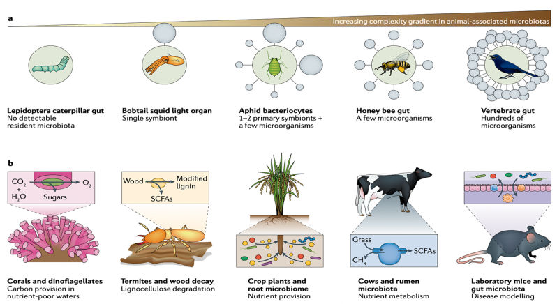

Publications / Alberdi Group
What we have
published
Our papers, methods and datasets document the questions we have pursued and the tools and evidence we have produced along the way.

Methods · data · perspectives
Complete archive
Find a paper.
Search by title, author, journal or topic, or narrow the list to a publication year.
Loading…